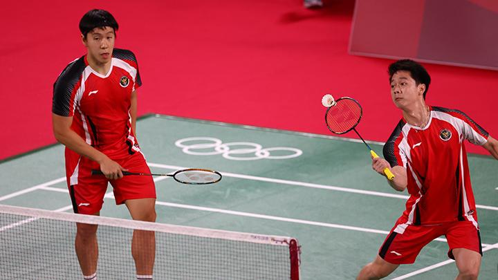

Legenda Indonesia Soroti Mental Marcus/Kevin di Olimpiade Tokyo 2020KOMPAS.com- Mantan pemain ganda putra Indonesia, Rexy Mainaky, menyoroti mental Marcus Fernaldi Gideon/Kevin Sanjaya Sukamuljo di Olimpiade Tokyo 2020. Rexy Mainaky yang saat ini menjadi pelatih kepala timnas bulu tangkis Thailand, menyebut aspek mental menjadi faktor utama Marcus/Kevin tak bisa melaju jauh di Olimpiade Tokyo. Marcus/Kevin mengawali Olimpiade Tokyo dengan meyakinkan. Mereka tak kehilangan satu gim pun saat berhadapan dengan Ben Lane/Sean Vendy dan Satwiksairaj Rankireddy/Chirag Shetty pada fase grup. Jalan terjal Marcus/Kevin baru terlihat saat mereka berhadapan dengan Lee Yang/Wang Chi-Lin pada laga pamungkas Grup A. Saat itu, Marcus/Kevin kalah rubber game 18-21, 21-15, dan 17-21. Baca juga: Badminton Olimpiade 2020, Terungkap Penyebab Minions Tersingkir Rexy Mainaky menilai kekalahan tersebut berdampak pada penampilan Marcus/Kevin di perempat final ketika melawan Aaron Chia/Soh Wooi Yik. Pada laga tersebut, Marcus/Kevin yang diunggulkan di tempat pertama, kalah dua gim langsung 14-21 dan 17-21. "Keduanya tidak bisa keluar dari tekanan, jadi itu yang membuat mereka tak bisa mengeluarkan permainan terbaik mereka," ujar Rexy Mainaky kepada Kompas.com, Sabtu (31/7/2021). "Yang membuat mereka lebih tertekan waktu takluk dari pemain Taiwan di mana pertemuan sebelumnya Marcus dan Kevin selalu menang. Di 8 besar, bertemu Malaysia, lawan yang juga dikalahkan mereka dalam 7 pertandingan sebelumnya." "Saya rasa itu faktor utama mereka tidak bisa menunjukkan permainan terbaik karena dua-duanya benar-benar merasa tertekan," kata peraih medali emas Olimpiade Atlanta 1996 ini. "Kalau ada satu saja yang bisa mengatasi (tekanan), saya rasa mereka mungkin bisa juara. Dalam keadaan tertekan saja, mereka bisa bermain rubber game (melawan Taiwan)." "Kekalahan dari Taiwan berdampak saat melawan Malaysia di 8 besar. Istilahnya tekanan lebih besar di perempat final karena sudah babak knock out. Marcus dan Kevin tidak bisa defence, main net pun tidak bisa. Jadi benar-benar tidak tahu mau main seperti apa." Lebih lanjut, Rexy Mainaky menilai tak ada yang perlu diubah dari permainan Marcus Fernaldi Gideon dan Kevin Sanjaya Sukamuljo. |
| ©Kompas.com |